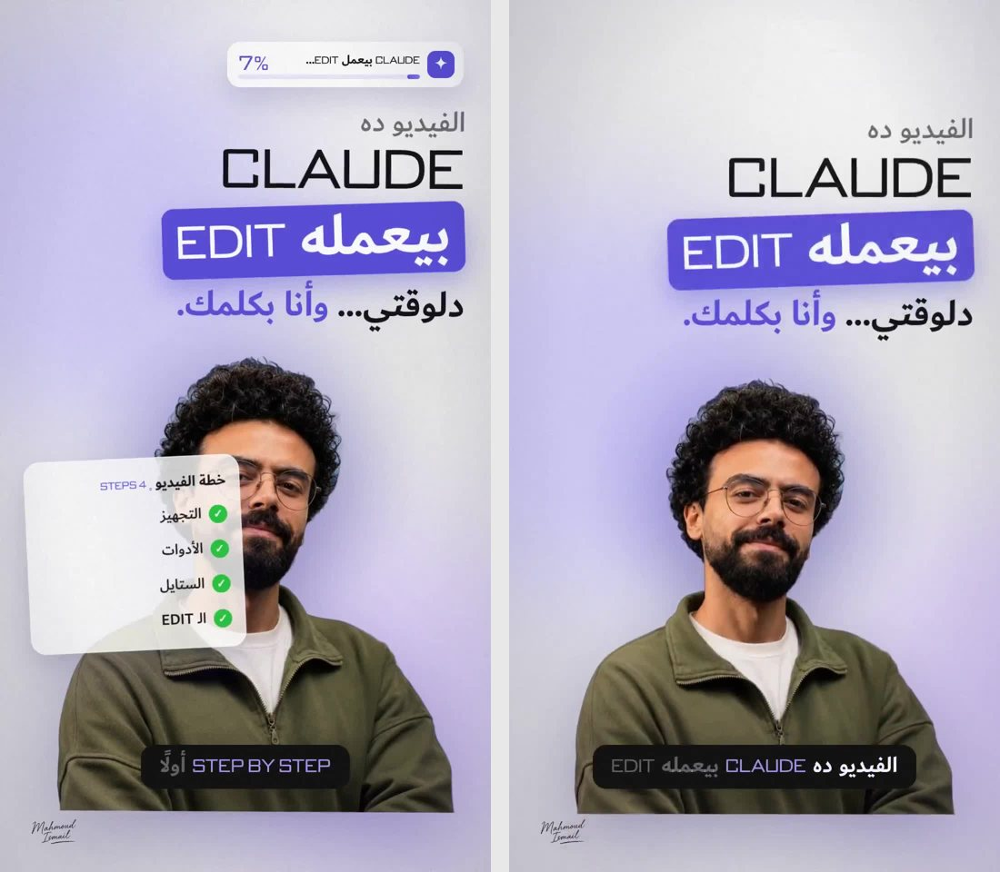
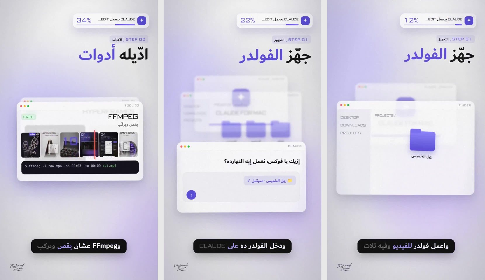
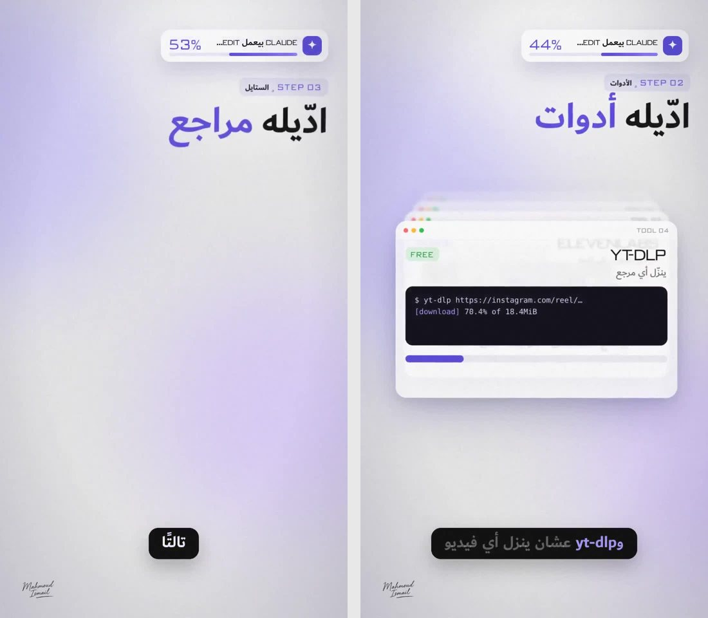
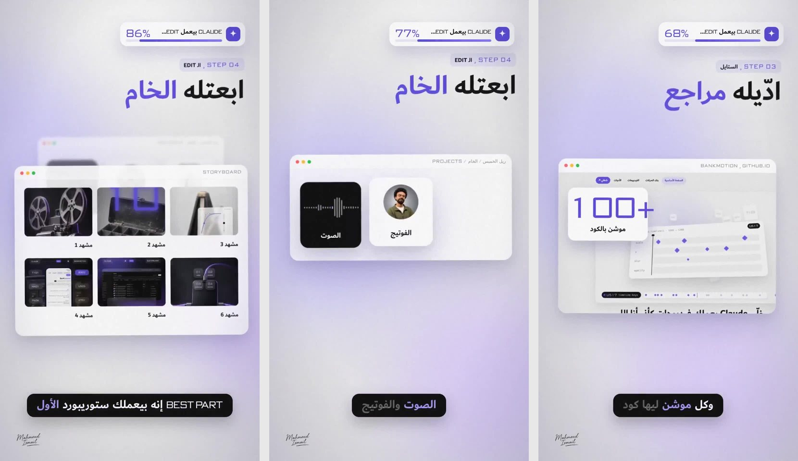

ريل الـ EDIT — Claude بيعمل EDIT للفيديو وأنا بكلمك
ريل دقيقة كامل، Claude بيعمله EDIT وأنا بتكلم. البادج اللي فوق بيمشي من 0% لـ 100% مع الشرح، و٤ خطوات تخليه يعمل EDIT لفيديوهاتك بستايلك انت.
إزاي اتعمل
الفكرة
الريل نفسه هو الإثبات: وأنا بشرح، Claude بيعمل EDIT للفيديو قدامك. فوق الشاشة بادج «Claude بيعمل EDIT» بيتملي من 0% لـ 100% مع كل خطوة، ولما يخلص الفيديو يكون خلص.
قسمت الشرح لـ ٤ خطوات، وكل خطوة ليها شباك زجاج بيوري اللي بيحصل فعلًا: الفولدرات، الأدوات، المراجع، والستوريبورد.

١. التجهيز
نزّل Claude على اللابتوب، واعمل فولدر للفيديو جواه ٣ فولدرات: الخام، المراجع، التصدير. وبعدين وصّل الفولدر ده بـ Claude.
كده Claude شايف كل ملفاتك، وبيحط الفيديو الجاهز في فولدر التصدير لوحده.
٢. الأدوات
HyperFrames للموشن بالكود، FFmpeg للقص والتركيب، ElevenLabs للكابشن بتوقيت كل كلمة، وyt-dlp عشان ينزّل أي مرجع. ومعظمهم ببلاش.

٣. الستايل
ادّيله مراجع كتير من الفيديوهات اللي عاجباك، ومعاهم BankMotion: أكتر من ١٠٠ موشن وكل واحدة ليها كود. تقوله الكود وهو يضيفها.

٤. الـ EDIT
ابعتله الخام (الصوت والفوتيج والصور) وقوله «اعمله EDIT بستايلي».
وأحلى جزء إنه بيعملك ستوريبورد الأول، مشهد مشهد، فتعدّل فيه قبل الرندر. ولما توافق، بيرندر والفيديو يخلص.
